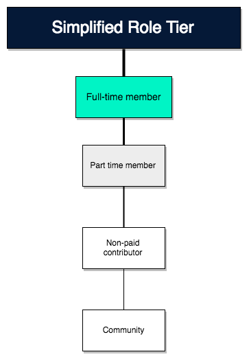
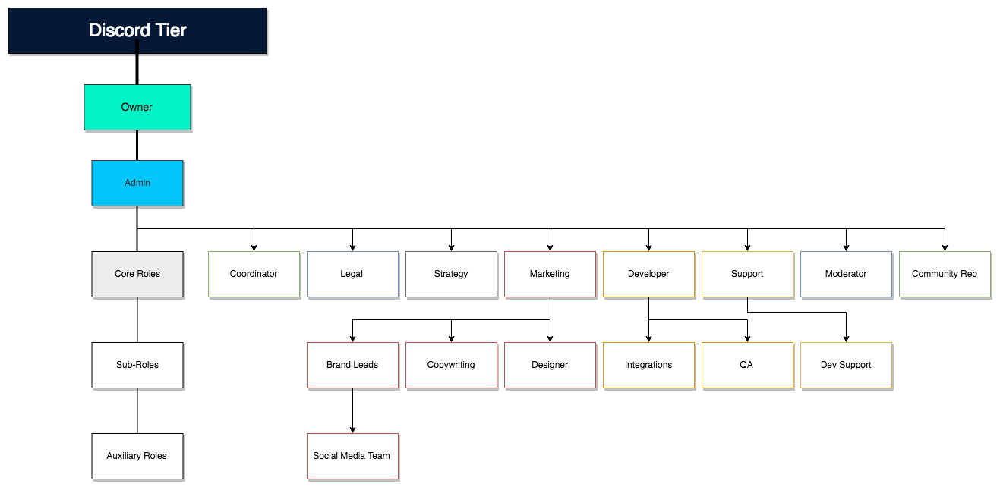
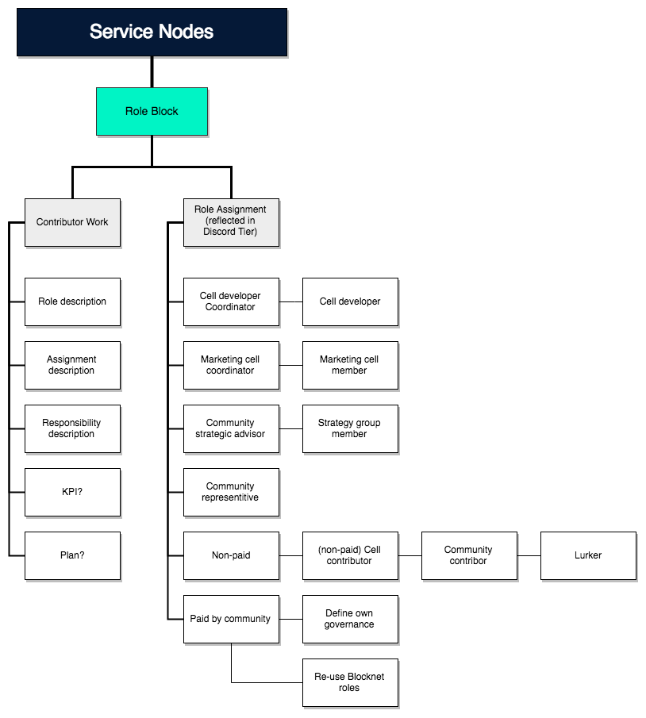
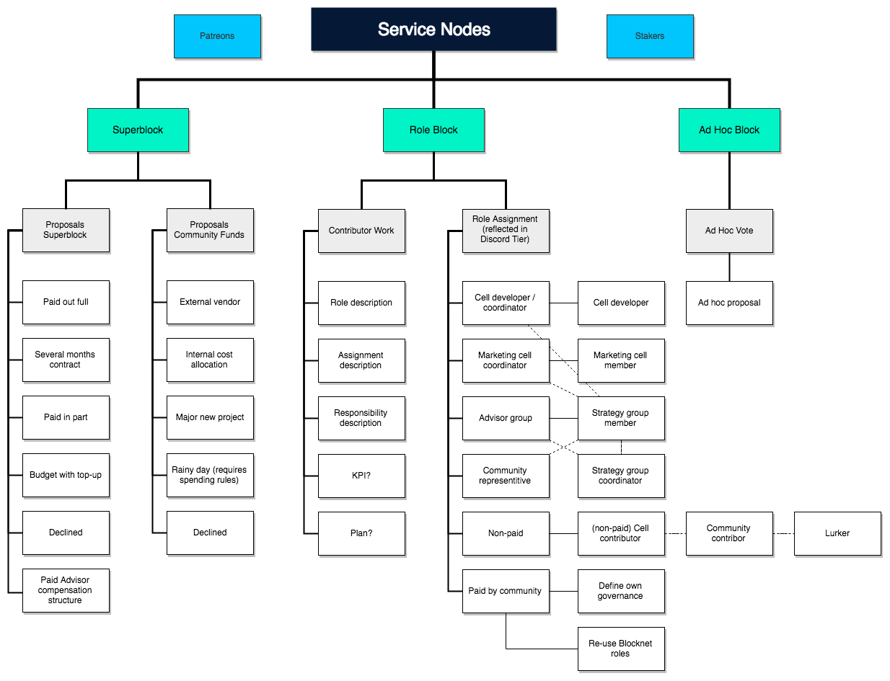
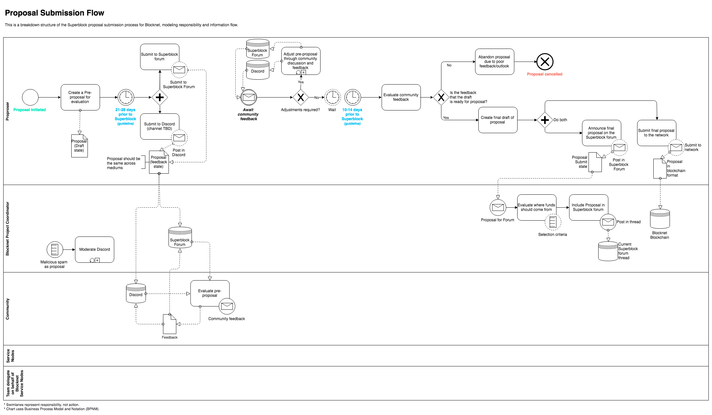
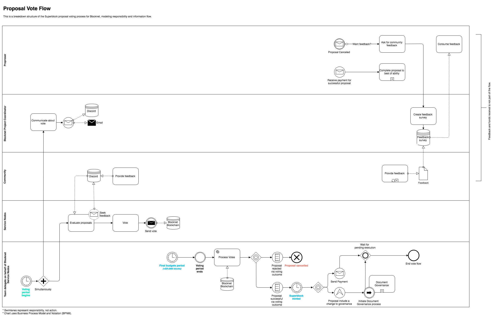
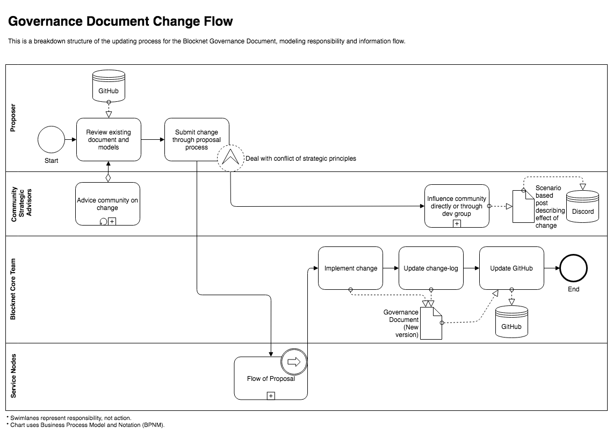
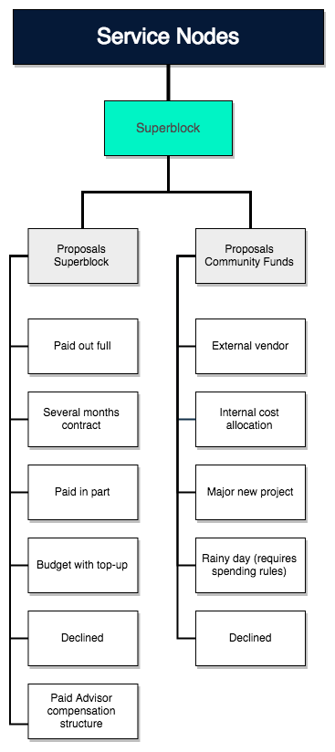

Blocknet Governance Model¶
Background¶
Blocknet is a blockchain interoperability project launched in 2014 by ITO. The ITO raised just short of 970 BTC in various assets worth $340,000 at the time.
The project burned through the ITO funds mainly because the assets held lost value and BTC being in a bear market. Blocknet was then privately funded by a few generous community members and the main developer.
This was unsustainable and the investor community was asking for a change. Various funding models were considered but a decision for masternodes and a more decentralized governance concept was chosen. The market reacted well to this decision. Blocknet’s masternodes are called Service Nodes as they deliver additional architectural functionality compared to classic masternodes.
Implementing masternodes was not without problems. An exploit in the forked code that had been the basis for Blocknet’s Service Nodes caused a small group to gain an abnormally large staking reward. The developer group managed to get hold of a large share of these funds and lock the rest in a fork. The 110,000 BLOCK redeemed now sits in a community fund, in a trusted setup where 4 out of 7 core team members to the project are required to spend the funds. This is an unfair responsibility and risk to put on those members so this proposal will include different scenarios of how to move ahead from here.
A simple ledger of the funds can be found here.
The current governance model by Service Nodes can be found here.
In short, every 43,200 blocks on the Blocknet blockchain, Service Nodes can choose to mint up to a maximum of 40,000 new tokens. These can then be allocated to fund development in the form of proposals.
Defining the Blocknet Project as an Entity¶
The business layer of Blocknet is an interoperability protocol to facilitate interaction between blockchains, either through exchange on the XBridge decentralized exchange component or through cross-chain communication with the XRouter blockchain packet routing component. XBridge trades generate fees charged in BLOCK for exchanges completed with the protocol, and XRouter calls generate fees charged in BLOCK for routing packets with the protocol. The entirety of these fees are transferred to the Service Nodes responsible for providing these services.
The idea is that the need for BLOCK required to settle the trade fees and submit cross-chain calls will create buy pressure on BLOCK, driving the price up. Furthermore, the redistribution of BLOCK from the market to service providers will function comparable to a dividend program incentivizing further service to the network by stakers and Service Nodes. Therefore, it can be argued that Blocknet has an earnings stream for the network service providers.
Development of Bocknet is, as described in Background, funded by Service Nodes choosing to add additional circulation by minting BLOCK. As the price of BLOCK increases due to added value from development, so will the relative purchasing power of the, up to, 40,000 BLOCK minted every month.
In 2014 Vitalik Buterin, co-founder of Ethereum, posted what he called “DAOs, DACs, DAs and More: An Incomplete Terminology Guide” to the Ethereum blog. According to Vitalik, the difference between a DAO and a DAC is whether the project pays rewards. By this definition Blocknet would classify as a DAC, a Decentralized Autonomous Corporation.
It’s important to understand that Blocknet doesn’t have a direct link between what could be considered a revenue stream and expenditures to freelance contractors, such as developers and supporting activities. It is the Service Nodes and stakers of Blocknet that earn revenue in the form of BLOCK rewards redistributed for participation in providing a service to the network.
The above model is speculated to sustain organic growth of Blocknet. However, what Blocknet lacks is a means to grow inorganically. The Superblock has a hard-coded maximum output of 40,000 BLOCK per month.
Looking at it from a different perspective: The nature of Blocknet’s cost has so far mostly been investing. Operational costs has been related to the edge of the network where node holders have had expenses for keeping the systems online. However, as the project has grown, proposals for the 40,000 BLOCK have taken on a nature more akin to monthly contracts rather than one time fees. Hiring contractors for a month's work allows for greater flexibility within that month to add value to the project where it might be required. Instead of proactively having to scope what has to be done, the contractors can instead reactively prioritize urgent matters.
Quite early on the community speculated a future need for operational staff: A support function that could help to network users with whatever issues they might face. Not having this would put Blocknet behind in the end-user experience that centralized competitors offer.
However, Blocknet was envisioned to function by contracts being proposed and filled by freelancers. Practically, the knowledge assets generated in the project have made interchanging resources inefficient. Knowledge assets are not managed into shareable objects and rather stay as tacit knowledge in the minds of those involved.
Process thinking is being applied to combat this, firstly in the supporting functions of marketing and media. These are expected to submit KPIs comparing Blocknet to market trends. Also formulating plans and visions so that the Service Nodes can monitor the performance of the team and govern accordingly. Eventually the team lead of each function should be more concerned with scaling their team (up and down), defining methods to work by rather than being hands-on themselves.
Example of the great methods being developed in marketing:
Governance Structure¶
The governance structure of Blocknet should primarily ensure that the flow of money and flow of information run as decentralized, transparent and trustless as possible.
Even a decentralized organization like Blocknet requires an operating model by describing the organizational structure, key processes and system, facilities, and locations. As previously stated, the objective of this paper is for Blocknet to scale while keeping it decentralized and not classified as a security.
Legal Compliance¶
To be added in a later update.
Contributor Tiers¶
Diagram based on Fattox's original proposal in Discord and will be detailed with descriptions in a later update.

Tapping Into the Hive-Mind of Our Community Channels¶
Using Discord:

The Use of Outside Contractors¶
To be added in a later update.
Segregation of Duty¶
All members must be voted in:

A separate flow of role assignment is to be added in a later update along with a proposal to add a new type of Service Node vote block with a more ad-hoc nature. Additional information to be added in a later update.
Partnership Engagement¶
To be added in a later update. Built on APQC and refined with practical insight from the partner group of Dungor’s day job.
Flow of Information¶
To be added in a later update.
Flow of Money¶
To be added in a later update.
Flow of Accountability¶
To be added in a later update.

Proposals for Superblocks¶
Proposal Submission Flow¶

Submission of Proposal to Network¶
Instructions:
- Ensure there is a minimum of 11 BLOCK in your wallet to pay for the proposal submission fee (10 BLOCK fee + transaction fee). This fee should be added to the proposal amount(in a later step) so that you are reimbursed upon acceptance of the proposal.
- Submit a pre-proposal to the relevant Superblock thread in the proposal forum with the following information:
- Proposal name as will be submitted to the network (18 character limit)
- Example: Qt-Exchange-Widget
- What is being proposed
- Rationale and further explanation of proposal & background info
- Technical explanation/agenda of feature/proposal (if applicable)
- Estimated time for components in the proposal (if applicable)
- Teams/person undertaking the work
- Cost assessment
- Are these expenses coming from the Superblock or community funds? Which community fund is it coming from?
- Fund custodians
- Proposal name as will be submitted to the network (18 character limit)
- By sticking to a similar format your proposal should accurately convey the relevant information, notably: what is being proposed, why it is being proposed, how much it will cost, and where the funds will go once created.
- After allowing some time for the proposal to be reviewed in the pre-proposal thread, the final proposal with any edits should be submitted to the relevant final proposal Superblock thread in the proposal forum.
- Once a final proposal is submitted to the forum, copy the post URL and create a shortened URL using Google's URL shortener: https://goo.gl/
- Open the wallet
- In the program menu, go to Window > Console. The debug console will open in a new window.
- The voting command uses the following command structure (all one line):
- Format:
mnbudget prepare [PROPOSAL NAME] [URL] [PAYMENT COUNT] [SUPERBLOCK BLOCK] [ADDRESS] [AMOUNT]- PROPOSAL NAME = The name of the proposal without spaces (18 character limit)
- URL = The shortened URL for the proposal link created
- PAYMENT COUNT = Amount of recurring payments to occur for the quantity in [AMOUNT]
- SUPERBLOCK BLOCK = The Superblock block count payments will start at
- ADDRESS = The BLOCK address to receive payments to
- AMOUNT = The amount to be compensated upon proposal approval
- Example:
mnbudget prepare privacy-mixer https://goo.gl/xxxxxxx 1 129600 Bxxxxxxxxxxxxxxxxxxxxxxxxx 100
- Submit the command and leave the debug console open. A transaction hash (tx hash) will be returned from the ‘prepare’ command above.
- Example:
1007f6f8055da51255285789554e2407eec5ec5521a5549df35543c5545ef050147
- Example:
- Now that you have the transaction hash, after 6 confirmations the proposal must be submitted using the following command. It's the previous command with
preparereplaced withsubmitand with the transaction hash appended to the end.- Example:
mnbudget submit privacy-mixer https://goo.gl/xxxxxxx 1 129600 Bxxxxxxxxxxxxxxxxxxxxxxxxx 100 1007f6f8055da51255285789554e2407eec5ec5521a5549df35543c5545ef050147
- Example:
- Verify that the proposal has been properly submitted by typing the following command and looking for the proposal:
mnbudget show
Proposal Vote Flow¶

For a proposal to pass and receive funding:
- The amount requested must be 40,000 BLOCK or less.
- Votes in favor must be greater than votes against by at least 10% of the total number of Service Nodes.
- The proposals that pass are sorted in a descending order list by the sum of yes votes minus no votes.
- If multiple proposals have an equal sum of yes votes minus no votes, those are sorted randomly.
- If there are not enough funds remaining in the Superblock for a proposal to be paid out, it is skipped(not paid out), and the next proposal in the passing list is checked for qualification.
- Multi-month proposals are voted on each month and are treated in the same manner as normal proposals in the ordered list.
| Voting Turnout | Yays Required | Max Nays Allowed |
|---|---|---|
| 100% | 55% | 45% |
| 80% | 56.25% | 43.75% |
| 40% | 62.5% | 37.5% |
| 20% | 75% | 25% |
| 10% | 100% | 0% |
| <10% | cannot pass | cannot pass |
Notes for expansion in further updates:
- Creating a formalized BIP processes that supports and nourishes ideas.
- Peer-reviewing ideas and suggesting improvements before they are submitted, but never censorship.
- A proposal that submits the fee to be voted on should always be added for voting.
Governance Document Change Flow¶

Note: This process calls the Proposal Submission Flow + Proposal Vote Flow in [Flow of Proposal] as Blackbox.
Classifying Investments Within Blocknet¶

To be detailed in a later update.
Service Node Engagement¶
To be added in a later update.
Conclusion: A proposed future Governance Model for Blocknet¶
Around 90% of blockchain projects die, either due to being blatant scams or never achieving a functioning organizational form. Blocknet is ad hoc yet reaching a more mature organizational form, but to enter the next stage, Blocknet will have to become more structured. By maintaining decentralization throughout the organization and by using process documentation, it's possible to have an aligned organization without bottlenecking key resources. Contributing to Blocknet then becomes more tangible as it allows contributors to approach the non-technical parts of Blocknet as open-source.